Introduction to Control Systems
Control 1
Imron Rosyadi
Learning Objectives
After this session, you will be able to:
- Define a control system and recognize common ECE applications.
- Distinguish open-loop and closed-loop (feedback) systems.
- Explain transient response, steady-state error, and stability qualitatively.
- Describe the main steps of the control system design process.
- Appreciate the role of computer-aided tools (e.g., MATLAB) in control design.
- Interpret the antenna-azimuth case study as a canonical position control problem.
Big Picture: What Is a Control System?
A control system is:
A collection of subsystems and processes (the plant) assembled to produce a desired output, with desired performance, in response to a specified input.
Key ingredients:
- Input (command / reference) – what we want.
- Plant / process – the physical system we influence.
- Output – what actually happens.
- Controller – logic that decides how to drive the plant.
- Optionally: feedback that measures the output.
Everyday Examples (ECE Focus)
Engineering / technology examples
- Elevator position and speed control.
- Disk drive head positioning.
- Antenna pointing for satellites.
- Motor drives in robots and drones.
- Power electronics: DC–DC converter voltage regulation.
- Communication systems: automatic gain control (AGC).
Natural / “biological” control systems
- Blood sugar regulation (pancreas / insulin).
- Heart rate and oxygen delivery in “fight or flight.”
- Eye tracking to keep moving targets centered on the retina.
- Muscle control when you reach and place an object precisely.
Note
Control concepts cut across electrical, mechanical, chemical, biological, and even economic systems.
Case-Study Learning Outcome
We will repeatedly return to a running case study:
Antenna azimuth position control system
You will use it to:
- See how a real electromechanical control loop is built.
- Connect physical hardware (motors, sensors, amplifiers) to block diagrams.
- Visualize transient response, steady-state error, and stability.
- Practice design trade-offs (speed vs. overshoot, accuracy vs. complexity).
1.1 Control Systems All Around Us
Control systems are integral to modern society:
- Space shuttle launch and orbit control – rocket thrust, attitude, and trajectory.
- CNC machining – precise movement of tools with cooling and speed control.
- Automated guided vehicles in factories – follow paths and avoid obstacles.
Natural examples inside your body:
- Hormonal control (e.g., insulin) maintains blood sugar.
- Adrenaline raises heart rate and breathing when stressed.
- Eyes and hands coordinate to track and grasp objects.
Even abstract systems like student performance vs. study time can be modeled as control systems.
Control System Definition & Basic Block Diagram
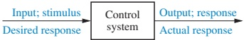
A control system consists of:
- Controller – implements the control law.
- Plant / process – physical system we’re controlling.
- Input – desired plant output (command).
- Output – measured plant response.
Elevator Example: Input, Output, Performance
Think of a modern elevator:
- You press the 4th floor button on the 1st floor.
- The car should move:
- Fast enough (but not scary).
- Smoothly, without oscillations.
- Stop level with the floor.
Input: “Go to 4th floor” (a step in desired position).
Output: actual car position vs. time.
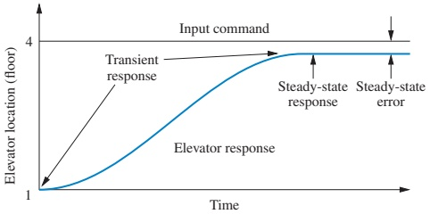
Two key performance aspects visible here:
- Transient response – how the elevator moves while changing floors.
- Steady-state error – how close the final position is to the floor.
Why Use Control Systems?
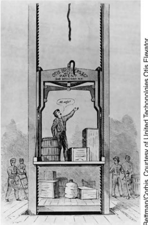 
We build control systems to:
- Amplify power – small electrical signals command large mechanical power.
- Enable remote control – operate systems from a distance or hazardous area.
- Change input form – e.g., a knob position → room temperature.
- Compensate for disturbances – maintain performance despite wind, load changes, noise, etc.
Disturbances & Compensation: Antenna Example
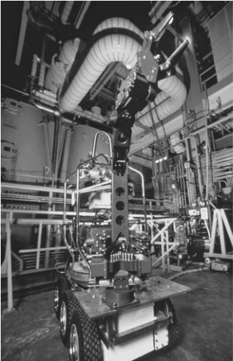
Example: Antenna pointing system
- Goal: keep antenna aimed at a satellite.
- Disturbances:
- Wind gusts push the antenna off target.
- Mechanical friction or backlash.
- Electrical noise in sensors/actuators.
A good control system:
- Detects deviation from commanded angle.
- Applies correction so the antenna returns to the right direction.
- Does this automatically; the reference input does not change.
1.2 Brief History of Control Systems (Human-Designed)
Control ideas go back over 2000 years:
- 300 B.C. – Greek water clocks (Ktesibios). Liquid-level regulation to maintain constant flow.
- Ancient oil lamps (Philon of Byzantium). Self-regulated oil level by clever tubing and air pressure.
- 1681 – Papin’s safety valve. Steam pressure regulation via weighted valve.
- 17th century – Drebbel’s incubator. Mechanical temperature controller using alcohol/mercury expansion.
Key theme: automatic regulation of a variable (level, pressure, temperature) using feedback-like mechanisms.
Historical Milestones: Speed Control
- 1745 – Edmund Lee
- Windmill speed control by automatically changing blade pitch.
- 1809 – William Cubitt
- Improved windmill with movable louvers for better speed regulation.
- Late 18th century – James Watt’s flyball governor
- Rotating balls rise with speed, mechanically throttling steam input.
- Classic mechanical speed feedback system.
Key idea: speed is measured, compared to desired value, and used to adjust input.
Mathematical Foundations: Stability Criteria
Major contributions in the 19th century:
- Maxwell (1868) – early stability criterion for 3rd-order systems.
- Routh (1874, 1877) – extended criteria to higher orders → Routh–Hurwitz stability test.
- Lyapunov (1892) – generalized stability theory to nonlinear systems.
These works turned practical control problems into mathematical questions about differential equations and their roots.
Tip
In later chapters, you will learn how to decide if a system is stable by looking at coefficients or roots of characteristic equations, not by trial-and-error experiments.
20th-Century Frequency and Root-Locus Methods
Key developments:
- Nicholas Minorsky (1920s) – theoretical basis of PID control for ship steering.
- Bode & Nyquist (Bell Labs, 1920s–30s) –
- Feedback amplifier analysis.
- Bode plots and Nyquist criteria for frequency-domain design.
- Walter R. Evans (1948) –
- Root locus: graphical method to see how closed-loop poles move as a gain changes.
These are the core analysis tools for classical linear control.
Contemporary Applications
Modern control systems are everywhere:
- Aerospace – missile and spacecraft guidance, aircraft autopilots, UAVs.
- Ships – heading control, roll stabilization, dynamic positioning.
- Process industry – temperature, pressure, concentration, flow, and thickness regulation.
- Automation & robotics – industrial robot arms, collaborative robots, warehouse robots.
- Consumer electronics – camera autofocus, disk drives, optical disk tracking.
Modern systems almost always include a digital computer as part of the controller.
Space Shuttle: A Complex Control System
The (now retired) space shuttle is a powerful example:
- Onboard computers handled:
- Navigation – estimating position and velocity from sensors.
- Guidance – computing desired trajectory and attitude.
- Control – generating commands to engines, thrusters, and aerosurfaces.
- Control subsystems included:
- OMS engine gimbaling in space.
- Elevon and rudder control in atmosphere.
- Reaction control system (RCS) jets for attitude when aero surfaces were ineffective.
- Power and life-support regulation (fuel cells, tank pressures, temperatures).
All these formed a hierarchical control architecture.
1.3 System Configurations: Open- vs Closed-Loop
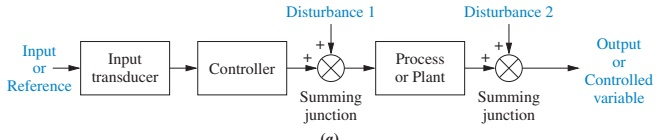
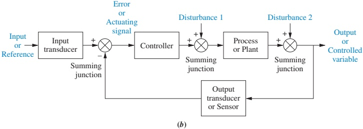
Two main architectures:
- Open-loop systems – no feedback; no automatic correction.
- Closed-loop (feedback) systems – output is measured and used to adjust input.
We can think of these as different internal architectures of the generic system in Figure 1.1.
Open-Loop Control: Structure

Characteristics:
- Control signal depends only on the input, not on output.
- Cannot correct for Disturbance 1 (added to controller output) or Disturbance 2 (added at plant output).
- Output may deviate significantly if environment or plant changes.
Open-Loop Examples
- Toaster
- Input: time setting.
- Output: toast color.
- Assumes “longer time → darker toast.”
- Does not sense actual color, bread type, or thickness.
- Mass–spring–damper with constant force
- Constant force determines equilibrium position.
- If another external force (disturbance) is applied, position changes and system does not correct.
- Your study plan
- You compute hours to study for 3 chapters.
- Professor adds a 4th chapter (disturbance).
- If you don’t adjust your plan, you are acting as an open-loop system.
Warning
Open-loop control is simple and cheap, but can be very sensitive to disturbances and modeling errors.
Closed-Loop (Feedback) Control: Structure

Key features:
- Sensor / output transducer measures output.
- Feedback path returns a signal proportional to output.
- At the summing junction, feedback is subtracted from input to form an error (actuating) signal.
- Controller drives plant to reduce error toward zero.
Why Feedback Helps
Closed-loop systems:
- Are less sensitive to disturbances and plant parameter variations.
- Can achieve higher accuracy (lower steady-state error).
- Allow designers to shape transient response and steady-state behavior more flexibly by adjusting loop gain or adding compensators.
Trade-offs:
- More complex hardware and software.
- Additional sensors, actuators, and signal processing.
- Potential for instability if the loop is not designed carefully.
Example: smart toaster oven - Measures internal light level / humidity → estimates toast “doneness.” - Adjusts time and heat dynamically. - More accurate but more complex and costly than a simple timer toaster.
Computer-Controlled Systems
In many modern systems, the controller is a digital computer (microcontroller, DSP, FPGA, etc.).
Advantages:
- Time-sharing: one computer can manage many loops.
- Easy to change controller characteristics via software, not hardware.
- Implement complex algorithms: adaptive control, optimal control, digital filters.
- Perform supervisory tasks: scheduling, fault detection, diagnostics, user interface.
Example: Space Shuttle Main Engine (SSME) controller - Two digital computers monitored: pressures, temperatures, flows, turbopump speed, valve positions, servo actuators. - Provided closed-loop control of thrust and mixture ratio.
1.4 Analysis and Design Objectives
Analysis vs. design:
- Analysis – determine how a given system behaves.
- Evaluate transient response and steady-state error.
- Check stability.
- Design – choose or modify system components/parameters to meet performance specs.
Three major objectives for control-system design:
- Desired transient response.
- Acceptable steady-state error.
- Stability.
Other considerations: cost, robustness, hardware constraints.
Transient Response: What Happens Before Steady State?
Transient response = system behavior from the moment the input changes until it settles.
Important because:
- Affects comfort and usability (elevator, car cruise control).
- Affects throughput (disk drive head must settle before reading/writing).
- May affect mechanical stress and reliability (too aggressive motion can damage hardware).
Example: disk drive head
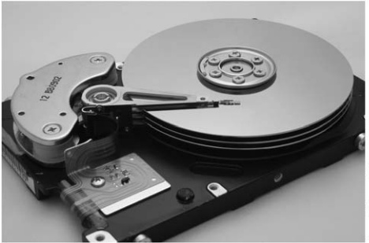
- Head moves from one track to another.
- Reading/writing cannot start until motion settles.
- Transient performance (speed, overshoot, damping) directly affects transfer rate.
Steady-State Response & Error
Steady-state response = behavior after transients have effectively died out.
Steady-state error (SSE) = difference between desired output and actual output in steady state.
Examples:
- Elevator leveling error: a few centimeters off can be dangerous.
- Antenna tracking error: if too large, satellite falls outside the beam.
- Disk drive head offset: results in read/write errors.
Design goals:
- SSE must be small enough to meet accuracy and safety requirements.
- But sometimes we trade between transient performance and SSE.
Important
Later we will quantify SSE for standard input types (step, ramp, parabola) and relate it to system type and gain.
Stability: The Non-Negotiable Requirement
Total response = natural response + forced response
\[ \text{Total response} = \text{Natural response} + \text{Forced response} \]
- Natural response – how the system behaves due to its own dynamics (homogeneous solution).
- Forced response – driven directly by the input (particular solution).
A useful control system must have a natural response that:
- Decays to zero as time → ∞, or
- Oscillates with bounded amplitude.
If the natural response grows without bound, the system is unstable:
- Elevator overspeeds and crashes limit stops.
- Aircraft diverges into uncontrollable roll.
- Antenna oscillates with increasing amplitude, hitting mechanical stops.
Warning
If the system is unstable, discussions of transient response and steady-state error are meaningless. Stability is the first checkpoint.
Other Design Considerations
Beyond transient, SSE, and stability, we must consider:
- Hardware constraints
- Motor torque and speed limits.
- Sensor accuracy, range, and bandwidth.
- Actuator saturation and dead zones.
- Cost and manufacturability
- Component selection vs. budget.
- Cost per unit for mass-produced products.
- Robustness / Sensitivity
- Real systems’ parameters change (temperature, aging, wear).
- A robust design maintains performance despite parameter variations.
- Sensitivity analysis quantifies how much specs change when parameters change.
Case Study: Antenna Azimuth Control
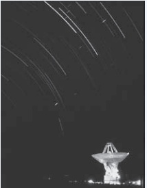
- We want an antenna to rotate (azimuth) to a commanded angle.
- Typical ECE components:
- Potentiometer for position sensing.
- Amplifiers for signal and power.
- DC motor and gears to move the antenna.
This is a position control system, similar in spirit to: - Robot joint control. - Camera pan/tilt platforms. - Radar and satellite dish pointing.
Antenna Azimuth System Layout
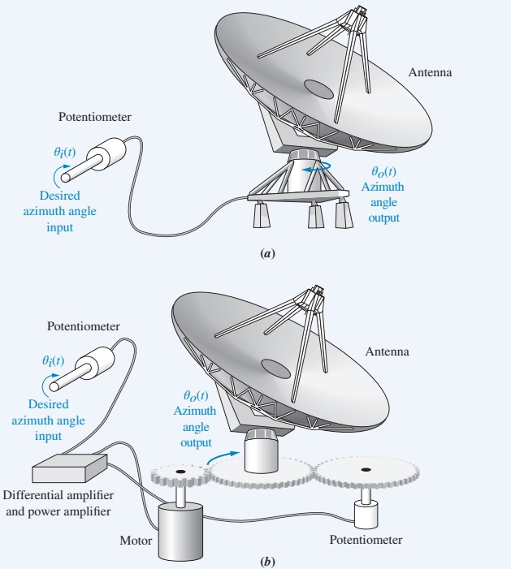 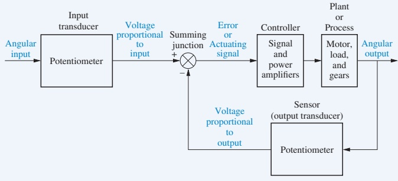
Goal: output angle \(\theta_o(t)\) tracks input command \(\theta_i(t)\).
Flow (qualitative):
- Input angle \(\theta_i(t)\) → potentiometer → input voltage.
- Output angle \(\theta_o(t)\) → feedback potentiometer → feedback voltage.
- Error = input voltage – feedback voltage.
- Signal and power amplifiers amplify error to drive DC motor.
- Motor + load rotate antenna until error ≈ 0.
Effect of Controller Gain on Response
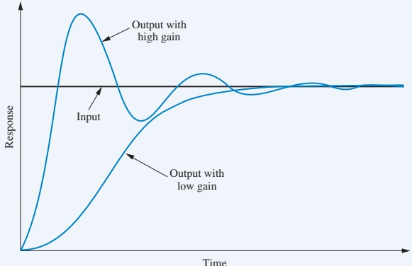
- With low gain:
- Motor turns slowly.
- Response is sluggish; long time to reach final angle.
- Often no overshoot.
- With high gain:
- Motor turns faster toward target.
- May overshoot and oscillate before settling.
- Can produce damped oscillations (under-damped response).
Steady-state value may still be exactly correct (zero steady-state error) in both cases, but transients differ.
Need for More Than Just Gain: Compensators
Sometimes, adjusting only the gain cannot meet both:
- A desired fast, well-damped transient response, and
- A desired small steady-state error.
Solution: use a controller with dynamic behavior, e.g.:
- Add integrators or filters in the controller.
- Implement full PID controllers or lead/lag compensators.
- Possibly add dynamic elements in the feedback path.
These added dynamics are called compensators.
Note
Compensators give us more degrees of freedom to shape both transient and steady-state performance, at the price of more complexity.
1.5 The Control System Design Process
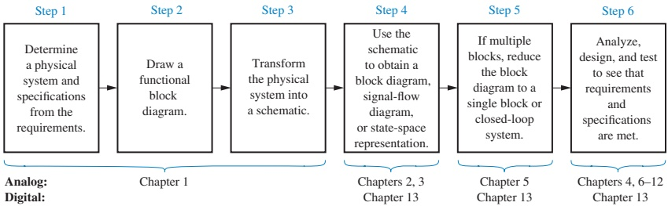
Typical steps:
- Transform requirements into a physical system concept.
- Draw a functional block diagram.
- Create a schematic with actual components.
- Develop a mathematical model (differential equations, transfer functions, or state-space).
- Reduce to an equivalent block diagram (simplify interconnections).
- Analyze and design to meet performance specs; iterate with testing.
Step 1 – From Requirements to Physical System
Requirements might say:
- Antenna must track commands with:
- Max settling time: e.g., 1 second.
- Max overshoot: e.g., 10%.
- Max steady-state error: small fraction of a degree.
- Constraints: weight, size, power, environmental limits.
- Operational needs: remote operation, maintainability.
From these, we propose a physical concept, like Figure 1.8(a): - Antenna + gear train + motor + sensors + electronics.
Step 2 – Functional Block Diagram
We translate the physical idea into functional blocks:
- Input transducer (potentiometer).
- Controller (amplifiers, logic).
- Plant (motor + load).
- Output transducer (feedback potentiometer).
Step 3 – Schematic Diagram
Next, we draw a more detailed electrical / mechanical schematic:
- Show potentiometers, amplifiers, motor, gear train, load inertia, friction.
- Make simplifying assumptions:
- Potentiometer inertia and friction negligible.
- Amplifier dynamics much faster than motor → model as pure gain \(K\).
- DC motor armature inductance small → model with resistance only.
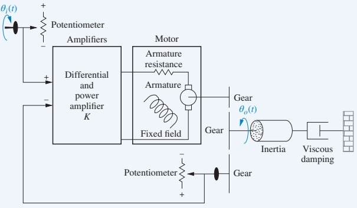
Step 4 – Mathematical Model
We use physical laws to derive equations:
- Kirchhoff’s voltage law (KVL) – sum of voltages around any closed loop is zero.
- Kirchhoff’s current law (KCL) – sum of currents at a node is zero.
- Newton’s laws – sum of forces (or torques) equals mass (or inertia) times acceleration.
For many systems, the model is a linear, time-invariant (LTI) differential equation:
\[ \frac{d^{n} c(t)}{dt^{n}} + a_{n-1} \frac{d^{n-1} c(t)}{dt^{n-1}} + \cdots + a_0 c(t) = b_m \frac{d^{m} r(t)}{dt^{m}} + b_{m-1} \frac{d^{m-1} r(t)}{dt^{m-1}} + \cdots + b_0 r(t) \]
Where:
- \(c(t)\) = output, \(r(t)\) = input.
- Coefficients \(a_i, b_j\) are functions of physical parameters.
Alternative models:
- Transfer functions (Laplace domain).
- State-space models (first-order vector form).
Step 5 – Block Diagram Reduction
We interconnect subsystem transfer functions to get an overall block diagram.
For the antenna azimuth system, we can reduce the full diagram to an equivalent single block:
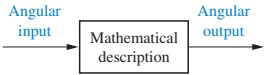
This “big” transfer function describes the relationship between:
- Input: commanded angle \(\Theta_i(s)\).
- Output: antenna angle \(\Theta_o(s)\).
Step 6 – Analyze and Design
Now we:
- Apply standard test inputs to predict performance:
- Impulse, step, ramp, parabola, sinusoid.
- Analyze:
- Stability.
- Transient response metrics.
- Steady-state error.
- Design / tune:
- Adjust gains.
- Add compensators.
- Possibly revise earlier steps if specs cannot be met.
Standard test inputs (from Table 1.1):
- Impulse \(\delta(t)\) → pure transient characterization, modeling.
- Step \(u(t)\) → transient + steady-state error.
- Ramp \(t u(t)\), parabola \(\frac12 t^2 u(t)\) → steady-state tracking quality.
- Sinusoid \(\sin \omega t\) → frequency response and modeling.
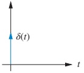
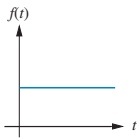
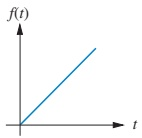

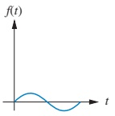
Interactive Exercise – Step Response Intuition
Use this interactive block to explore how gain affects a second-order system’s step response.
1.6 Computer-Aided Design (CAD)
Historically:
- Control design involved hand calculations and manual plotting.
- Large mainframes were needed for complex simulations.
Today:
- Desktop/laptop tools like MATLAB + Control System Toolbox, Simulink, LabVIEW, and others allow:
- Easy simulation of linear and nonlinear systems.
- Rapid “what-if” tuning of parameters.
- Automated plotting of time and frequency responses.
- Design and optimization of controllers (PID, state feedback, etc.).
Tip
In this course, you should: - First understand the theory and hand calculations. - Then use tools like MATLAB to speed up analysis and explore more complex designs.
1.7 The Control Systems Engineer
A control systems engineer often:
- Works at a system level defining and refining requirements.
- Interfaces with multiple disciplines:
- Electrical, mechanical, chemical, aerospace, biomedical.
- Computer science / software, applied mathematics, physics.
- Engages in top-down design:
- Start with system-level goals and constraints.
- Break them down into subsystems and detailed designs.
Benefits of studying control systems:
- You will see how earlier courses (circuits, signals, mechanics, programming) fit into a unified system design process.
- You learn a common language that bridges different engineering domains.
Summary / Key Points
- A control system regulates a plant’s output to follow a desired input, often in the presence of disturbances.
- Control systems are everywhere: elevators, antennas, disk drives, robots, power converters, biological systems, and more.
- There are two main architectures:
- Open-loop – simple but cannot correct for disturbances.
- Closed-loop (feedback) – uses output measurement to reduce error and improve robustness.
- Core performance objectives:
- Desired transient response.
- Small steady-state error.
- Guaranteed stability.
- The design process follows an ordered sequence: from requirements → physical concept → functional diagram → schematic → mathematical model → analysis and design.
- Computer tools (MATLAB, Simulink, LabVIEW, etc.) are essential, but must be used with understanding.
- The antenna azimuth position control system provides a concrete case study to illustrate these ideas throughout the course.
Formula & Concept Summary
Although this chapter is mostly conceptual, remember these key mathematical ideas and terms:
Total response decomposition: \[ \text{Total response} = \text{Natural response} + \text{Forced response} \]
Standard linear differential equation model (LTI system): \[ \frac{d^{n} c(t)}{dt^{n}} + a_{n-1} \frac{d^{n-1} c(t)}{dt^{n-1}} + \cdots + a_0 c(t) = b_m \frac{d^{m} r(t)}{dt^{m}} + b_{m-1} \frac{d^{m-1} r(t)}{dt^{m-1}} + \cdots + b_0 r(t) \]
Key performance concepts (to be quantified later):
- Transient response – rise time, overshoot, settling time, damping.
- Steady-state error – final error for step/ramp/parabola inputs.
- Stability – whether natural response decays or grows unbounded.
Standard test inputs (Table 1.1):
- Impulse: \(\delta(t)\).
- Step: \(u(t)\).
- Ramp: \(t\,u(t)\).
- Parabola: \(\frac{1}{2} t^2 u(t)\).
- Sinusoid: \(\sin \omega t\).
Practice Problem (Conceptual)
You press the accelerator pedal in a car to go from 40 km/h to 60 km/h using cruise control.
- Identify:
- Input (reference).
- Plant.
- Output.
- Feedback signal.
- Suppose the cruise control is disabled and you manually hold the pedal at a fixed position.
- Is this open-loop or closed-loop control?
- What kind of disturbances might affect your speed?
- With cruise control enabled, what advantages does closed-loop control give compared to holding the pedal manually?
Next Steps
In the next chapter, we will:
- Learn how to derive mathematical models (transfer functions, state-space) from electrical and mechanical schematics.
- Start connecting physical parameters (mass, resistance, inductance, gain) to dynamic behavior.
- Apply these techniques to the antenna azimuth case study.
Encouraged preparation:
- Review basic differential equations (homogeneous + particular solutions).
- Review Laplace transforms and linear time-invariant systems if you’ve seen them.